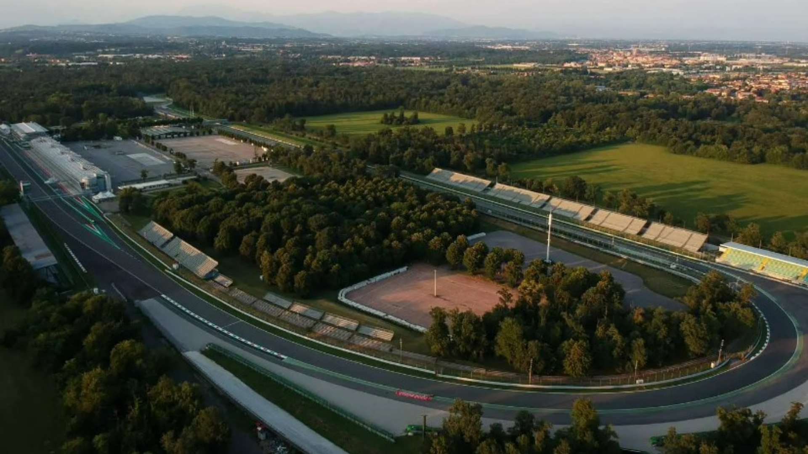
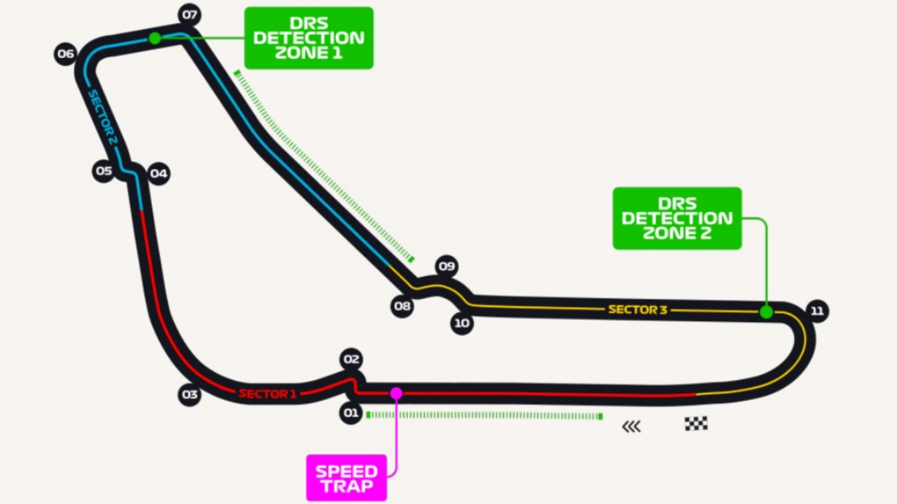

Monza - Circuito
Localidad: Monza, Italia
Longitud: 5793 km
Ancho medio: 12 m
Fecha: 2024-09-01
Hora: 15:00:00
Vueltas: 53
Referencias:
- https://es.wikipedia.org/wiki/Autodromo_Nazionale_di_Monza
- https://www.dazn.com/es-ES/news/motor/circuito-monza-donde-esta-como-es-caracteristicas-como-llegar-fotos-escenario-gp-italia-mundial-f1/1rvwgg1hco88f14fi4ivfb1g00
- https://www.f1italy.com/es/la-historia-del-circuito-de-monza
Coordenadas del Circuito: (45.618978, 9.281183) a 183 m
Tramo 1
Distancia: 618.53 m
Coordenadas del Tramo: (45.624517, 9.281925) a 187 m
Número de sector: 1
Tramo 2
Distancia: 45.06 m
Coordenadas del Tramo: (45.624655, 9.282475) a 187 m
Número de sector: 1
Tramo 3
Distancia: 155.7 m
Coordenadas del Tramo: (45.626000, 9.282080) a 188 m
Número de sector: 1
Tramo 4
Distancia: 330.18 m
Coordenadas del Tramo: (45.628892, 9.283190) a 189 m
Número de sector: 1
Tramo 5
Distancia: 168.94 m
Coordenadas del Tramo: (45.629882, 9.284807) a 191 m
Número de sector: 1
Tramo 6
Distancia: 157.46 m
Coordenadas del Tramo: (45.629956, 9.286829) a 191 m
Número de sector: 1
Tramo 7
Distancia: 358.21 m
Coordenadas del Tramo: (45.630188, 9.291394) a 191 m
Número de sector: 2
Tramo 8
Distancia: 45.22 m
Coordenadas del Tramo: (45.630559, 9.291632) a 191 m
Número de sector: 2
Tramo 9
Distancia: 318.7 m
Coordenadas del Tramo: (45.631368, 9.295553) a 188 m
Número de sector: 2
Tramo 10
Distancia: 94.66 m
Coordenadas del Tramo: (45.630896, 9.296557) a 188 m
Número de sector: 2
Tramo 11
Distancia: 267.67 m
Coordenadas del Tramo: (45.628494, 9.296825) a 188 m
Número de sector: 2
Tramo 12
Distancia: 501.63 m
Coordenadas del Tramo: (45.626077, 9.291383) a 190 m
Número de sector: 2
Tramo 13
Distancia: 570.98 m
Coordenadas del Tramo: (45.622678, 9.285911) a 186 m
Número de sector: 3
Tramo 14
Distancia: 110.8 m
Coordenadas del Tramo: (45.621694, 9.285775) a 201 m
Número de sector: 3
Tramo 15
Distancia: 78.92 m
Coordenadas del Tramo: (45.621184, 9.285069) a 185 m
Número de sector: 3
Tramo 16
Distancia: 975.9 m
Coordenadas del Tramo: (45.612462, 9.283690) a 180 m
Número de sector: 3
Tramo 17
Distancia: 87.69 m
Coordenadas del Tramo: (45.611887, 9.282932) a 180 m
Número de sector: 3
Tramo 18
Distancia: 182.59 m
Coordenadas del Tramo: (45.612787, 9.281007) a 191 m
Número de sector: 3
Tramo 19
Distancia: 360.46 m
Coordenadas del Tramo: (45.616026, 9.280837) a 182 m
Número de sector: 3
Tramo 20
Distancia: 330 m
Coordenadas del Tramo: (45.618978, 9.281183) a 183 m
Número de sector: 3